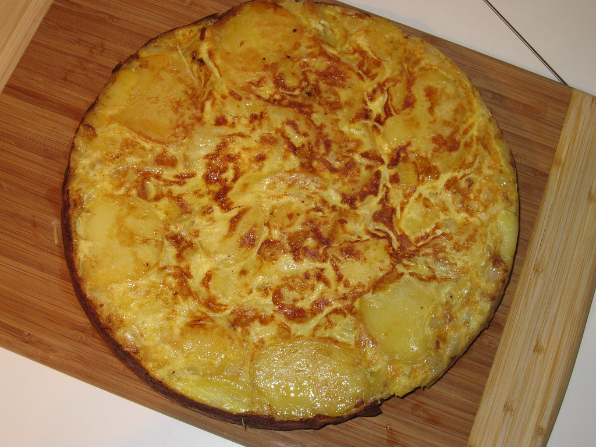

Spanish Omelette

A Spanish omelette, or tortilla, is made with tender fried potatoes and onions cooked with eggs for a hearty meal or delicious tapa dish that everyone will enjoy.
Ingredients
- Olive oil
- Potatoes
- Salt and pepper
- Onion
- Eggs
Steps
- Heat oil in large skillet
- Add potatoes and season lightly with salt and pepper.
- Stir occasionally until potatoes are cooked, but not crisp.
- Add onions and season lightly until soft and beginning to brown.
- Whisk eggs in a bowl, season with salt and pepper.
- Pour eggs into the skillet and stir gently to combine with potatoes and onion.
- Reduce the head to low and cook until eggs begin to brown on the bottom.
- Loosen omelette with a spatula. Invert a large plate over the pan, and carefully flip omelette out onto the plate.
- Slide omelette, uncooked-side down, back into the pan. Cook until eggs are set.
Home